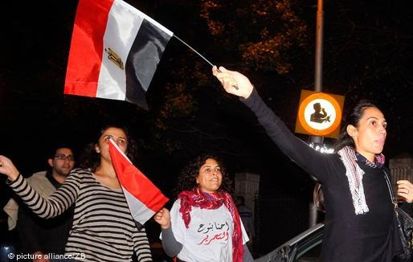
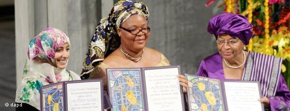

پذيرش > سایت نوشته ها > سال ۲۰۱۱ بر زنان جهان چگونه گذشت؟


 سال ۲۰۱۱ بر زنان جهان چگونه گذشت؟ سال ۲۰۱۱ بر زنان جهان چگونه گذشت؟
3 دی 1390 - مهیندخت مصباح - نسخه قابل چاپ
مجمع جهانی اقتصاد میگوید که کاهش تبعیض بین زن و مرد در امر اشتغال، نیروی محرکه اصلی رشد اقتصاد اروپا در دههی گذشته بوده است. با این همه، آلمان که یک بانوی صدراعظم و پنج وزیر زن دیگر در کابینه دارد، هنوز با نرخ اندک حضور زنان در سطوح مدیریتی روبروست.
بنا بر گزارش مجمع جهانی اقتصاد که در نوامبر سال ۲۰۱۱ منتشر شد، هنوز هیچ کشوری در جهان وجود ندارد که شکاف جنسیتی در آن به طور کامل از بین رفته باشد. بر اساس دادههای این گزارش، فقط کشورهای اروپای شمالی به موفقیتهایی در کاهش این شکافها دست یافتهاند. ایسلند، نروژ، فنلاند، سوئد، ایرلند، نیوزیلند، دانمارک، فیلیپین، لسوتو و سوییس، ده کشوری هستند که تلاشهایی درخور برای کاهش نابرابری جنسیتی درسطوح مختلف انجام دادهاند.
شمار زنان آلمانی حاضر در هیات مدیره شرکتهای صنعتی و تولیدی، تنها ۲/۲ درصد است. برای همین ۳۰ شرکت دولتی بزرگ آلمان در سال ۲۰۱۱ در راستای قانون برابری جنسیتی، طرحی را به قصد افزایش شمار زنان در سطوح بالای مدیریتی به دولت ارائه کردند.

آنگلا مرکل صدراعظم آلمان در نظر سنجی مجله فوربس، جایگاه قدرتمندترین زن جهان را به دست آورده، اما این قدرتمندترین زن دنیا معتقد است که وضعیت کمرنگ زنان در اقتصاد و مدیریت کشورش، بدون تضمین قانونی تکان محسوس نخواهد خورد.
بهار عربی و شکوفایی زنان عرب
زنان در سال ۲۰۱۱ بازیگران نوظهور منطقه خاورمیانه و شمال آفریقا بودند. آنها با اعتراض، ساماندهی، وبلاگنویسی یا اعتصاب غذا، نقشی کلیدی در خیزشهای اجتماعی و سیاسی این سال ایفا کردند. روزنامه گاردین با اشاره به حضور دریایی از زنان در پایتختهای شمال آفریقا و شبه جزیره عرب، در تفسیری نوشت: « زنان عرب میتوانند ادعا کنند که در شورشهایی که منطقه را لرزانده، همه چیز بودهاند.»

در سال ۲۰۱۱ برای نخستین بار در تاریخ یمن، ۳ وزیر زن به کابینه این کشور راه یافتند. "امه الرزاق حمد" عضو حزب كنگره مردمی حاكم بر كشور به عنوان وزير امور اجتماعی و كار، "حوريه مشهور" از نيروهای انقلابی و مخالف رژيم صالح به عنوان وزير حقوق بشر و "جوهره حمود" كه قبلا دبير كل حزب سوسياليست مخالف نظام صالح بود، به عنوان وزير مشاور انتخاب شد.
در ماه سپتامبرسال ۲۰۱۱، پادشاه عربستان سعودی اعلام کرد که زنان این کشور از سال ۲۰۱۵ حق انتخاب کردن و انتخاب شدن در شوراهای محلی عربستان را خواهند داشت.
هنوز روشن نیست آیا زنانی که بهار عربی را شکوفاتر کردند، قادر خواهند بود حقوق برابر با مردان برای خود کسب کنند یا نه. اما یک چیز روشن است و آن اینکه این زنان تصویر قدیمی از زن عرب را به عنوان موجودی بیتفاوت، زیر دست و خانه نشین تغییر دادهاند.
نقش زنان در صلح جهانی
سه زن جایزه نوبل صلح را در سال ۲۰۱۱ دریافت کردند: دو بانوی لیبریایی همراه با توکل کرمان از یمن. برندگان لیبریائی نوبل صلح ، الن جانسون سیرلیف، نخستین رییس جمهور زن آفریا و لیما گبووی فعال حقوق بشر بودند.
کمیته نوبل علت گزینش سیرلیف و گبووی را نقش مهم آنان در پایان دادن به جنگهای داخلی ۱۳ ساله در لیبریا و فعالیتهایی دانست که برای تحکیم صلح و حمایت از حقوق زنان انجام دادهاند.

کمیته نوبل هنگام اعطای جایزه صلح به ۳ زن عرب و آفریقائی دربیانیهای اعلام کرد: «تلاش مسالمتآمیز این زنان در راه امنیت زنان دنیا و حق زنان برای مشارکت کامل در ایجاد صلح» دلیل این گزینش بوده است. در بیانیه کمیته نوبل همچنین آمده بود که: «بدون دستیابی زنان به فرصتهای اثرگذاری در تمام سطوح جامعه که در اختیار مردان است، به دمکراسی و صلح پایدار در جهان نخواهیم رسید.»
بان کیمون، دبیرکل سازمان ملل متحد نیز خواهان افزایش حضور زنان در رهبری ماموریتهای حافظ صلح این نهاد شد. او گفت که حضور زنان در این عرصه باید تا سال ۲۰۱۴ به ۳۰ درصد برسد و تا سال ۲۰۲۰ دستکم ۴۰ درصد رشد یابد.
بانکی مون با اشاره به اعطای جایزه نوبل صلح سال ۲۰۱۱ به سه زن تاکید کرد که این رویداد، باید انگیزهای تشویقی برای دولتها و نهادهای بینالمللی باشد تا زنان هرچه بیشتری را در تصمیمات مهم مربوط به مناقشات و نزاعها شرکت دهند.
زنان افغانستان نیز در کنفرانس بینالمللی افغانستان که ۵ دسامبر ۲۰۱۱ در شهر بن تشکیل شد، خواستار سهم هرچه بیشتری برای مشارکت در روند صلح این کشور و تصمیمگیریهای سیاسی دیگر شدند.
ده زن رییس جمهور در جهان سیاست
با پیوستن دیلما روسف برزیلی به باشگاه رهبران سیاسی دنیا، شمار روسای جمهور زن در سطح جهان به ۱۰ نفر در سال ۲۰۱۱ رسید. در حال حاضرروسای جمهور فنلاند، ایرلند، لیتوانی، سوییس، هند، قرقیزستان، لیبریا، برزیل، آرژانتین و کستاریکا زن هستند.
انتخاب دیلما روسف سوسیال دمکرات به ریاست جمهوری برزیل که مهمترین کشور آمریکای لاتین محسوب میشود، رویداد برجستهای در جهان زنان بود. روسف نخستین زن درتاریخ سازمان ملل نیز هست که در ۲۱سپتامبر ۲۰۱۱، اجلاس عمومی این سازمان را افتتاح کرد و گفت: « من کاملا مطمئن هستم که این قرن، قرن زنان خواهد بود.»

روسف چهرهای چپگراست که سابقه مبارزات چریکی در کارنامه خود دارد و مردم برزیل به او لقب "بانوی آهنین" دادهاند. روسف در نظر سنجی مجله آمریکایی فوربس برای انتخاب صد زن قدرتمند جهان، در ردیف سوم قرار گرفته و از محبوبیت زیادی در آمریکای لاتین برخوردار است.
در ماه مارس ۲۰۱۱ برای اولین بار در تاریخ مالی یک زن نخست وزیر این کشور شد. در اوت همین سال نیز خانم شیناواترا بعنوان اولین نخست وزیر زن تایلند سوگند وفاداری خورد.
دولت پاکستان هم که پس از ترور بینظیر بوتو، زنی را در مقامهای ارشد سیاسی جایگزین نکرده بود، حنا ربانی کهر را به عنوان اولین وزیرخارجه زن این کشور منصوب کرد. ربانی کهر تنها ۳۴ سال دارد و میتوان گفت حضور برجسته دولتی خود در جامعه مردانه پاکستان را همانند بینظیر بوتو، مدیون خانواده پرنفوذ و پدر سیاستمدار خود است.
غروب یک نخست وزیر زن
در اکتبر سال ۲۰۱۱ یولیا تیموشنکو، نخست وزیر پیشین اوکراین که در مارس ۲۰۱۰ از مقام خود عزل شده بود، به اتهام تخطی از حدود اختیارات خود محاکمه شد. دادگاه او را به دلیل دستور امضای قرارداد انرژی بین اوکراین و روسیه، که به شرکت نفتی اوکراین زیان رسانده است، به هفت سال زندان محکوم کرد.
تیموشنکو در سال ۲۰۰۵، سومین زن قدرتمند جهان شناخته میشد و به دلیل لباسهای فاخر و فانتزی و مدل موی ویژه خود نیز در مرکز توجه بود. او در اوج شهرت خود گفته بود که میخواهد زیبایی و زنانگی را وارد سیاست کند. منتقدان تیموشنکو از نزدیکی بیش از حد او به آمریکا و تقلیدش از سبک لباس پوشیدن ژاکلین کندی خرده میگرفتند.
صد زن قدرتمند جهان
مجله فوربس از سال ۲۰۰۴ میلادی، فهرستی از زنان پرقدرت جهان سیاست و اقتصاد را منتشر میکند. این مجله امسال آنگلا مرکل را قدرتمندترین زن دنیا در سال ۲۰۱۱ معرفی کرد. هبلاری کلینتون، وزیر خارجه آمریکا و دیلما روسف، رییس جمهور برزیل مقامهای دوم و سوم را در این فهرست صد نفره اشغال کردهاند.
میشل اوباما که در فهرست این مجله در سال ۲۰۱۰، نخستین مقام را داشت، در سال ۲۰۱۱ به رده هشتم سقوط کرده اما همچنان زنی قدرتمند، محبوب و پرنفوذ شناخته میشود. نگاهی به پرتره این صد زن نشان میدهد که اکثریت مطلق آنان از میان مدیران اقتصادی، فرهنگی و چهرههای سیاسی هستند.
الن جانسون سیرلیف، رییس جمهور لیبریا و برنده جایزه نوبل صلح ۲۰۱۱، نخستین زن آفریقایی در فهرست مجله فوربس است. او پیش از تصدی ریاست جمهوری لیبریا، دربانک جهانی کار میکرده و تلاشهای کنونی خود را بر فقرزدایی و بهبود اوضاع کشورش پس از سالها جنگ داخلی متمرکز کرده است.
قدردانی از دادستان زن افغان
"ماریا بشیر" دادستان ولایت هرات در سال ۲۰۱۱ از سوی مجله آمریکایی فارین پالیسی، در فهرست صد متفکر برتر جهان قرار گرفت. خانم بشیر اولین زن افغان است که ریاست دادستانی ولایتی را برعهده گرفته و پیش از آن نیز در سال ۲۰۱۰ یکی از ده زنی بوده که جایزه ویژه "زن شجاع" را از وزارت خارجه آمریکا دریافت کرد. او پس از سقوط طالبان و در سال ۲۰۰۶ به این مقام رسیده است. ماریا بشیر به نقل از مجله فارین پالیسی، در سال ۲۰۱۰ به ۸۷ پرونده خشونت علیه زنان و ازدواجهای زیر سن قانونی دختران رسیدگی کرده است.
زنان مشهوری که درگذشتند
جهان زنان قدرتمند، ثروتمند، هنرمند و پرنفوذ در سال گذشته چند چهره را نیز از دست داد که در میان آنها می توان به الیزابت تیلور، هنرپیشه آمریکایی، کریستا وولف، نویسنده و ادیب آلمانی، سوتلانا استالین، تنها دختر ژوزف استالین و وانگاری ماتهای، اولین زن آفریقایی برنده جایزه صلح نوبل اشاره کرد. ماتهای بخاطر کوشش خستگی ناپذیر برای حفظ محیط زیست در کنیا، به مادر درختان شهرت داشت.
استمرار شکاف جنسیتی در جهان
سال ۲۰۱۱ در حالی به پایان میرسد که فقر همچنان در میان زنان به ویژه در کشورهای رو به توسعه و جنوبی بیشترین قربانی را میگیرد. زنان کماکان نازلترین دستمزدها را دریافت میکنند و برای دستیابی به فرصتهای شغلی و آموزشی منتظر پرشدن سهمیه مردان میمانند.

هنوز در پارهای کشورهای رو به توسعه به ویژه در آفریقا و شبه قاره هند، زنان براثر زایمان یا عفونتهای ناشی از سقط جنین، خشونتهای جنسی یا سوءتغذیه میمیرند. سنت ختنه و ناقص سازی جنسی زنان نیز همچنان در برخی از کشورهای اسلامی و آفریقایی رواج دارد.
قتلهای ناموسی در مناطق روستایی و دورافتاده جنوب شرقی ترکیه در سال ۲۰۱۱ پرشمارتر شدند. طبق آمارهای موجود، در هفت سال گذشته دستکم ۳۰۰ زن با میانگین سالانه ۴۲ نفر در مناطق کردنشین و جنوب شرق ترکیه، قربانی تعصبات دینی و فرهنگی شدهاند. اما به گزارش خبرگزاری آناتولی، تعداد این قربانیان تنها در سال ۲۰۱۱ به هفتاد نفر رسید. نکته قابل تامل در این میان آن است که عاملان این قتلها، موضوع را خودکشی جلوه میدهند تا از چنگال عدالت و مجازات قانونی بگریزند.
بر اساس یک بررسی سالانه، افغانستان پایینترین نرخ متوسط عمر زنان را در جهان داراست. میانگین عمر زنان افغان، تنها ۴۵ سال است. خبرگزاری آلمان گزارش میدهد که پس از افغانستان، کشورهای نیجریه، گینه بیسائو، یمن، چاد، جمهوری دمکراتیک کنگو، اریتره، مالی، سودان و آفریقای مرکزی، واجد بدترین شرایط برای مادران هستند.
دویچه وله
ارسال به
بالاترین
،
توییتر
،
فریندفید
،
فیسبوک
در همين بخش :
 یک خبر تلخ؟ یک قانونشکنی؟ یک تصمیم بخشنامهای جدید؟ یک خبر تلخ؟ یک قانونشکنی؟ یک تصمیم بخشنامهای جدید؟
چرا بایست به سکسوالیته پرداخت؟ / نفیسه آزاد
آزارجنسی خانگی؛ «قربانی» نه، «نجات یافته»
زنان، بزرگترین بازندگان بهار عرب
سانسور از دیدگاه جنسیتی/الهه امانی
ديگر بخش ها :
طرح یک میلیون امضا
|
مقالات
|
سایت نوشته ها
|
اخبار
|
گزارش كمپين
|
گفت و گو
|
علیه سکوت
|
كوچه به كوچه
|
نامه های شما
|
گزارش ویژه
|
گفتگو با اعضا
|
ویژه سالگرد کمپین
|
تصویر برابری
|
دل آرام علی
|
تریبون
|
مقالات
|
تاریخ شفاهی
|
خارج از چارچوب
|
کتابخانه
|
درباره کمپین
|
کمپین در شهرها
|
کمپین در بند
|
صدای تغییر
|
ویژه 22 خرداد
|
لایحه حمایت از خانواده
|
گالری
|
عشا مومنی
|
امیر یعقوبعلی
|
خدیجه مقدم
|
راحله عسگری زاده و نسیم خسروی
|
پروین اردلان،جلوه جواهری، مریم حسین خواه، ناهید کشاورز
|
زینب پیغمبرزاده
|
سعیده امین، سارا ایمانیان، محبوبه حسین زاده، ناهید کشاورز و همایون نامی
|
احترام شادفر
|
نسیم سرابندی زاده،فاطمه دهدشتی
|
وبلاگ مهمان
|
پرونده خرم آباد
|
دستگیری ها
|
مریم مالک
|
پرستو اللهیاری
|
مهرنوش اعتمادی
|
سمیه رشیدی
|
Other Languages
|
همراهان
|
«فراخوان کمپین ده روز با بهاره هدایت»
| English
|